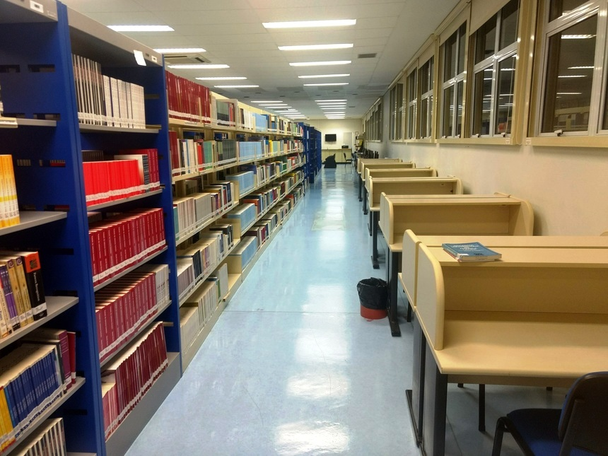
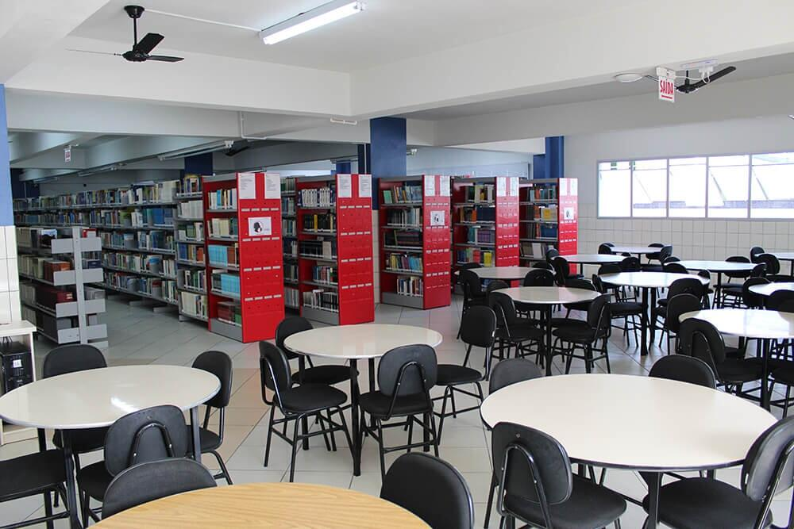

- 
Livros não mudam o mundo,
quem muda o mundo são as pessoas.
Os livros só mudam as
Pessoas.
História
A biblioteca Passcoral, foi fundada por amigos apoiadores da leitura, sendo assim com mo objetivo de trasmitir informação e conhecimentos de diversas temas da humanidade atraves dos livros, com o foco em um público de todas as idades
Livros e Acervo
Os livros são classificados por seção, Aonde temos todas as seções disponiveis de todos os generos , Trazendo assim uma gama muito grande de possibilidades para os leitores
BIBLIOTECA PASSCORAL
A preferida dos amantes da leitura
Nossas estruturas
* São mais de 10.500m² construídos para atender clientes e a comunidade em geral:
* O acervo inclui mais de 500 mil volumes:
* As portas estão abertas. Quem deseja solidificar conhecimento:
* Tornar competitivo e se posicionar no mercado de trabalho tem à
disposição bibliografias atualizadas e modernas:
* Representantes em todas as localidades de São Paulo:
* Profissionais treinados:
* Melhor prazo de empréstimos:
Diferencial
Empresa que visa totalmente a prioridade de
seus clientes, Não apenas como obrigação de
contrato, Mais sim como
satisfação em atender
sempre as necessidades de nossos clientes,
Além
de da ótima estrutura, Em suma possui
profissionais rigorosamentes
qualificados para
melhor atende-lo